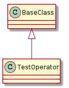

An operator operates tests.
For each configuration-file found an operator is created.
OperatorStaticTestParameters = namedtuple("OperatorStaticTestParameters",
['operator_parameters',
'static_parameters',
'test_parameters'])
TEST_TAG = "**** {tag}: {s} Test {r} of {t} ****"
TEST_POSTAMBLE = "**** {tag}: Ending test - elapsed time = {t} ****"
TEST_RESULT = "**** {tag}: Test Result = {r} ****"

TestOperator(test_parameters, ...[, ...]) |
An operator runs the sequence of operations. | ||
TestOperator.countdown_timer |
|
||
TestOperator.sub_logger |
|
||
TestOperator.sleep |
|
||
TestOperator.one_repetition(parameter, ...) |
Holds the test algorithm for one repetition. | ||
TestOperator.log_info(message, node) |
|
||
TestOperator.__call__() |
This is the main operation method. | ||
TestOperator.keyboard_interrupt_intercept() |
The watcher watches for signal interrupts and kills children. |